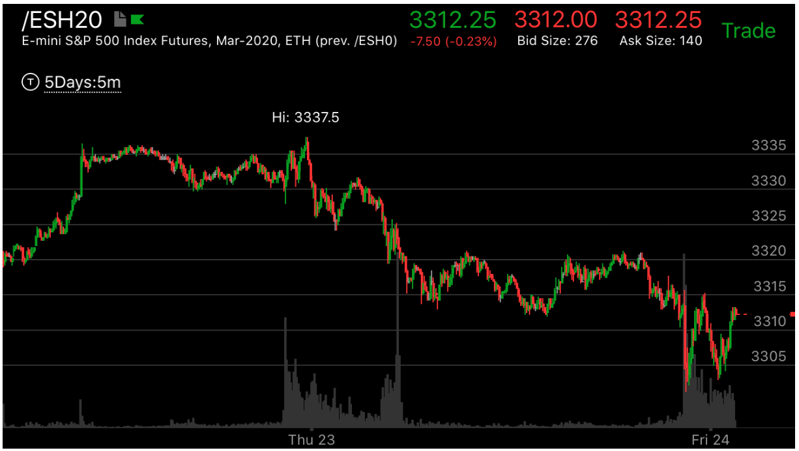
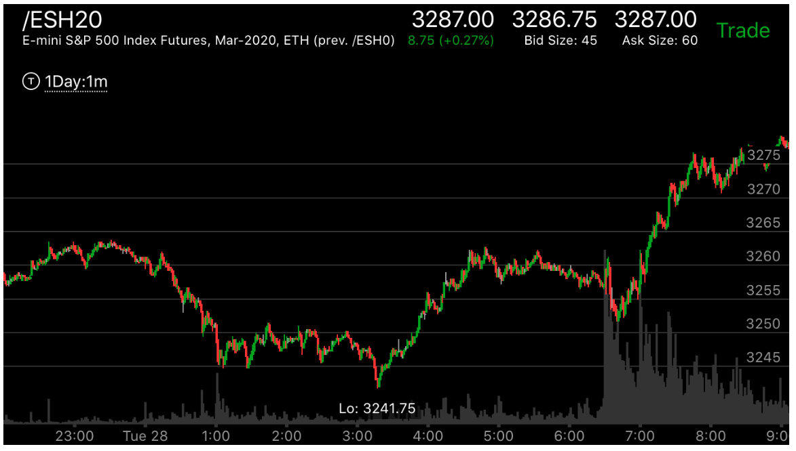
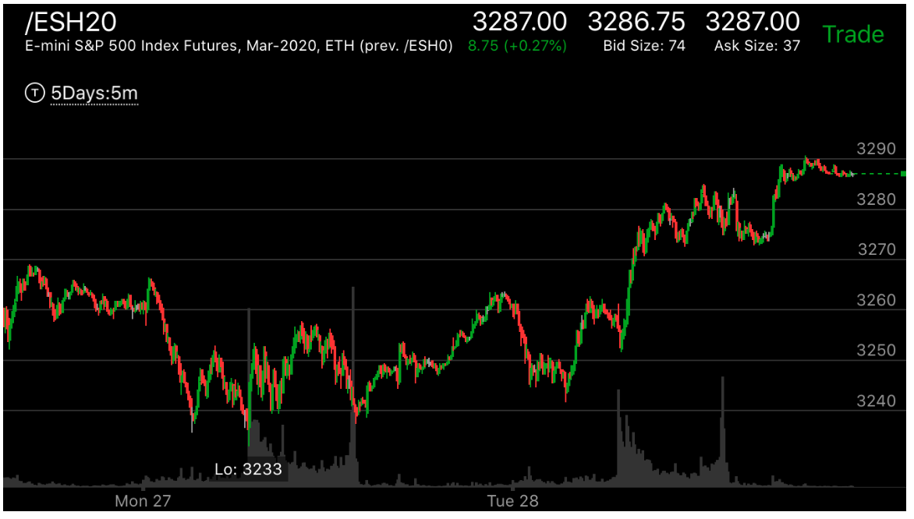

新级点立刻拉回走势
- 这个走势也常常出现在继续形态当中，运动中出现相对弱势，然后长时间震荡，创震荡新极点后，立刻拉回继续前进。
- 已经反转了，但是它在底部很不平坦，就开始了反转的运动。这时，它在运动后，常常反戈一击，创新的极点后，
立刻拉回。这样，它不会形成跨越走势。
- 这个走势让人意外，因为它创了新低/新高，以为前面的走势没有结束。其实是虚晃一枪。

图示:在Thu23前，大盘在冲高后，加速上涨，然后在高点一直徘徊，其实这时已经反转了。
但是因为后面一直低于最高点。它在最后下跌以前，创新高后，立刻拉回，这个不能是看作是相对弱势。因为它在前面加速上涨后，
在高点停留了很久。已经反转了。

图示:Mon已经反转了。它开始上涨。然后拉回。可以看到它的底部很不平坦。Tue31.它创新低，立刻拉回。
形成了上涨的相对弱势。然后彻底反转。

图示:7：20到7：40在底部震荡很久。然后上涨，走平，再次下来，创新低。立刻拉回。然后大涨。


图示:图二在Mon27下跌后，反弹，然后创新低后，立刻拉回，形成了底部。
而图一则是在上涨的过程中，相当于图二Tue28的位置，相对弱势的大幅拉回，然后走平，在最后上涨前，创新低后，立刻拉回，
开始上涨。所以这个是立刻拉回走势的反转和继续形态。